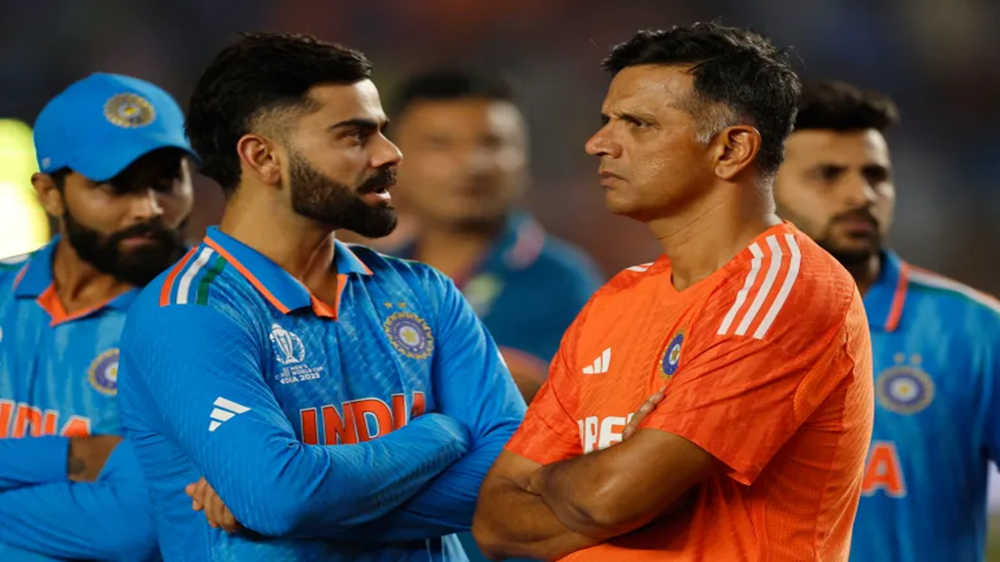
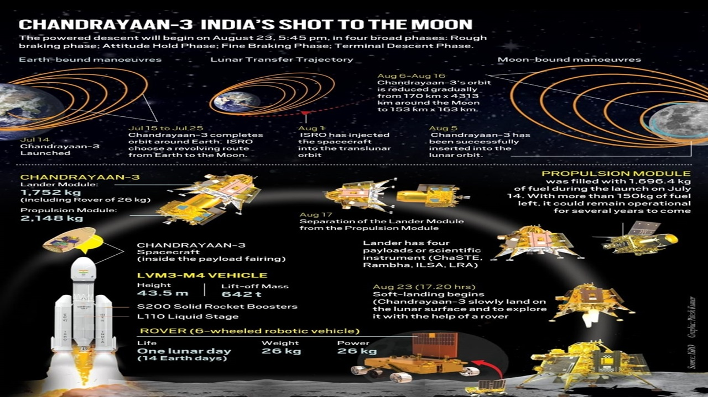
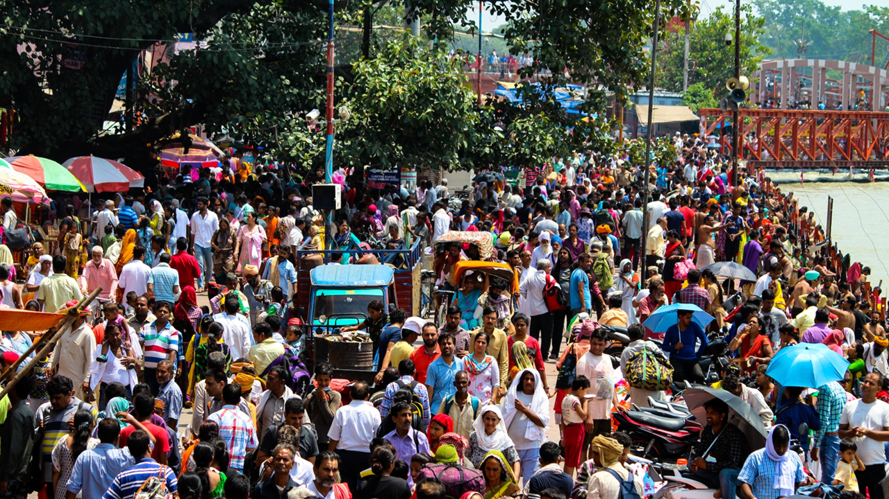

Echoes of Defeat: A Personal Reflection on India's 2023 World Cup Loss
The first one read, "India's loss in the 2023 World Cup final has echoes of West Indies' defeat in the 1983 World Cup final." The parallels are...
Read full article →

Chandrayaan-3: India's Imperatives for Space Leadership
Chandrayaan-3's exploration of the lunar south pole signifies a new era in India's space endeavors...
Read full article →

UN DESA Policy Brief No. 153: India overtakes China as the world's most populous country
In April 2023, India's population is expected to reach 1,425,775,850 people, matching and then surpassing...
Read full article →
Teetotaller-Turned- Liquor Baron Lalit Khaitan Is India's Newest Billionaire
The 80-year-old liquor magnate is chairman of the $380 million Delhi-based Radico Khaitan...
Read full article →

Google Year in Search 2023: Who were the most searched people in India
As the year 2023 comes to a close, Google has revealed the most searched personalities in India...
Read full article →

Top 10 Most Searched Recipes in India in 2023
Mango pickle was the most searched recipe in India in 2023...
Read full article →